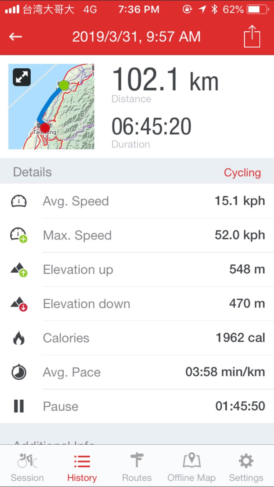

2019 趁著離職的空擋，原先想去國外度個假，無奈時程太近，機票都貴得不可思議
隨著男友的一句：「要不我們去環島？」
就奠定了 自以為很輕鬆路途卻不停碎念的 環島之旅
平常完全沒在騎單車，完全不知道如何起頭比如
-
要拜拜選黃道吉日嗎？
-
怎麼規劃路線？
-
要帶哪些單車用品？
-
買單車嗎？還是要去哪裡租單車呢？
-
住宿要怎麼定？
然後就很興奮的看網路上的文章到凌晨…
-
要拜拜選黃道吉日嗎？
要歐，還要算紫微斗數加上黃道十二宮加上生辰八字，才能規劃出遊時間歐
選日子大概就跟季節、天氣還有時間有關
夏天，吹的是西南風加上高溫日曬，有時候還有機率遇到颱風來參一腳
冬天，吹的東北風，寒流來的時候會冷到想要回去躲在棉被裡
所以其實相對好騎的季節就是春秋，選一個有假有閒，天氣預報看起來挺不錯的時間就可以出發囉！
-
怎麼規劃路線？
一開始對於規劃路線完全沒有頭緒，只知道在路上好像有 [環島 x] 的路牌，是不是跟著這走就沒問題？其實也是可以，但是環島路線有很多條，有的會帶你走崎嶇的山路讓你欣賞山間風景，有的會沿著海岸讓你吃盡海鹽，所以依照當天體力跟路線，並作適時的調整，是一件很重要的事
我們整趟路主要依靠兩個 app 來做導航
可以看到該 app 上面有些有顏色的線路，紅色主要都是 [環島 x] 的路線，或著是其他推薦的單車路線。
上面也有很多黃色小小的符號，是腳踏車的店家，在環島時如果遇到什麼自己也沒辦法處理或是想要打氣的話，就可以很輕鬆找到附近店家。
而且它也可以在邊騎乘的時候一邊紀錄，可以同時追蹤自己的速率跟坡度，很方便規劃以及記錄自己的行程呢！

Google map
可以由 google map 的 我的地圖 規劃主要行程，還有必去的地點跟必吃的食物ＸＤ
放在不同圖層也很方便做管理
{kind=link}
每天一開始時我們會用 google map 看今天要騎的距離跟坡度還有時間，讓自己一天有足夠的心理準備
{kind=link}
現在台灣的 google map 還沒有單車的選項，所以我們都會用走路以及騎車兩著交替著看。走路可以看到詳細的坡度，但有時候走路會帶你走連腳踏車都無法走的小路。而機車，因為不考慮使用者的體力，所以有時會無情的選擇挑戰度很高的上坡讓你騎。但兩著大多是參考，最主要路線會依照 Runtastic 的單車路線再做小幅度改變
而每天該騎多久？要規劃多遠的路線呢？
腳踏車稍微一點力騎，時數就會上到 20km/hr ，如果是夏天要避開中午 12–2 點 最熱的時段，所以一天騎乘時間可以依照天氣做調整
所以輕鬆騎的話一天大概排 60–80 km ，大約兩週左右可以完成整趟
而一天如果排 100–120 km 左右的話，大約一週左右就可以騎完
在規劃路線時，我們也參考了一些很棒的文章或網站，協助規劃路線
要帶哪些單車用品？
因為男友小時有一次熱血過了頭，從桃園騎單車到淡水，什麼東西都沒配備，就一個人一台車來回這趟，所以其實 “什麼東西都沒配備” 也是可以完成的
很建議初入一個運動，不知道要怎麼選擇時，就去迪卡儂走走，在那邊的腳踏車區域，就會大概知道自己要哪些東西，而這趟我們大約帶了這些東西
必備
-
ikea 塑膠夾鏈袋 － 其實在騎乘時很怕遇到下雨，如果下雨更怕的就是自己裝備都濕掉，我們在路上都用夾鏈袋把衣物或墊子產品包好，即使遇到下雨也不怕濕掉或潮濕
-
車褲 － 這筆錢就給他花下去，好的車褲帶你上天堂，沒穿車褲讓你…環島期間一天超過五個小時再叫踏車上，能車褲作緩衝，就真的會差很多
-
手套 － 一樣是緩衝必備品，會讓手掌舒服很多的必備品
-
袖套 － 當太陽直直地曬，袖套會保護手臂不會曬傷，這樣晚上入睡時就會少一個痠痛的地方
-
多功能頭巾 －多功能頭巾真的很方便，不論是騎單車還是跑步，可以帶在額頭止汗，也可以圍著脖子防曬
-
快乾襪子 x 3 －帶了三雙是為了替換以及如果當天突然暴雨可以多一雙替換
-
薄單車風衣 －因為我們在其他地方找不到想要的風衣，最後還是回到迪卡儂買單車專用風衣，主要就是收納後會變超小，然後擋風稍微檔雨，我們在路途中有一天就下小雨，穿著這風衣就顯得很方便呢！
-
洗衣袋 － 這是這次最直得帶的一件物品，當洗衣機不在房內時，輕輕鬆鬆就可以把全部衣服一次性帶回房間晾，也可以保證襪子不會被洗衣機吃掉ＸＤ
-
休足時間、撒隆巴斯(噴) － 畢竟平常也沒騎單車的習慣，該長單車肌肉的地方一定是一堆肥肉，所以當休息時，痠痛可以得到舒緩，真的會讓隔天比較想要多踩幾公里
-
現金、信用卡跟提款卡 －一切沒帶的，都可以用現金補足ＸＤ
以下選配
-
車衣 －我們沒有買專用騎單車的車衣，而是拿平常運動的排汗衣來穿，因為不是車衣，所以也帶了三件做替換
-
外出短褲－因為車庫的特別樣式，其實在市區穿著也挺害羞的，所以多帶了一件短褲，提早到住宿的地方，可以先洗個澡並替換在外出時穿著
-
各種沐浴、防曬用品－大概就是依照個人需求選擇自己熟悉的使用
買單車嗎？還是要去哪裡租單車呢？
因為之前都沒有騎過單車，貿然買車的話也不保證自己以後會不會繼續騎，加上台北土地寸土寸金，要找一個可以不讓腳踏車風吹日曬的地方也不容易，因此我們決定租單車
網路上其實也有很多租車的資訊，我們就很隨性的打開 google 找一個評價高、價位還不錯的就去拜訪 我們最後選了 樂奇單車 (我們其實也只看了這一間ＸＤ)。老闆跟老闆娘人都超好、超可愛，很熱心地教我們很多簡易單車資訊
出租前老闆也會堅持一定要保養好才可以交車

租車費包含了很多只會在環島用到的裝備，這樣其實可以省下很多不方便。也提供換胎工具，網路上很多的教學影片，真的讓我們這次學習到如何換後輪內胎！
車種大多都是 Giant 的車，路上遇到 Giant 的連鎖店也可以進去尋求協助。因為我們是在路邊換內胎只有手動的簡易充氣桶，就可以到店內把剩下的氣壓補齊！
除了出了車禍，好像也不用太擔心單車會壞掉到超出能自我修復的範圍內
建議可以加裝手機架跟牛角，讓騎乘時適時可以換手的位置
p.s 店裡的博美超可愛的！
要選公路車還是登山車？
當初我們根本分不清楚這兩著的差別，老闆很親切的跟我們講解，並讓我們試騎
公路車沒有避震，輪子也相對細一點，摩擦力小，騎起來會比較輕鬆一點，但遇到大坑會震得很痛
而登山車，有避震，相對騎起來也比較吃力點，再有坑坑疤疤的路上，登山車一定比公路車相對舒適
因為台灣 很現代化 要騎的路其實都是有柏油了，而這就是所謂的公路，所以在路上沒有坑坑疤疤的狀態下，其實公路車真的是環島的首選，當你踩一次，登山車要踩兩倍力。在身上比例肥肉大於肌肉時，公路車比較不會殘害自己的肌肉
但實際選擇還是建議可以自己去店裡面試騎，選擇最適合自己的單車
住宿要怎麼定？
舊一點的文章說要先訂好住宿，稍微新一點的文章就會說可以在當天中午休息時在訂房。這一切都要感謝科技的方便！
我們整趟旅程完全依靠 Airbnb 完成！！
除了第一天的住宿有提早訂(因為第一天里程數相對少知道自己一定騎得到)，其餘的都是在前一晚參考隔天出發時間還有里程，隔天上午再訂房
因為當騎第二天後就會大概知道自己一天可以騎多遠，就可以預估隔天狀態還有行程
-
期望大家都可以順利出行 平安回來囉！
原本以為騎完會瘦兩圈，看來除了肌肉痠痛沒有太大的變化 ＱＱ
comments powered by Disqus